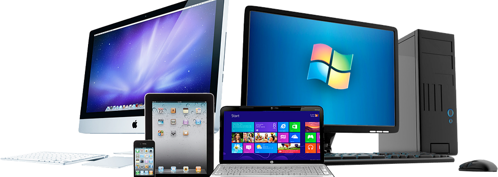
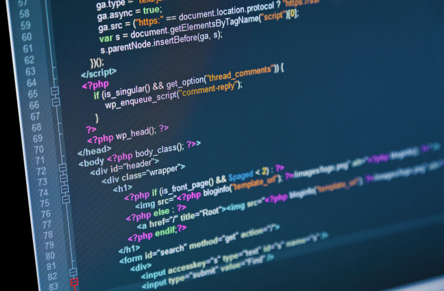
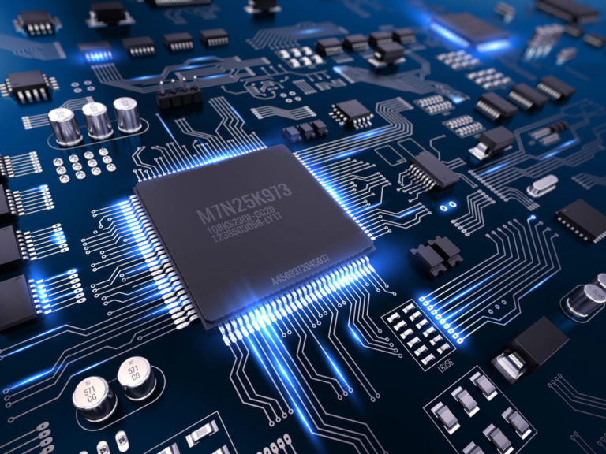
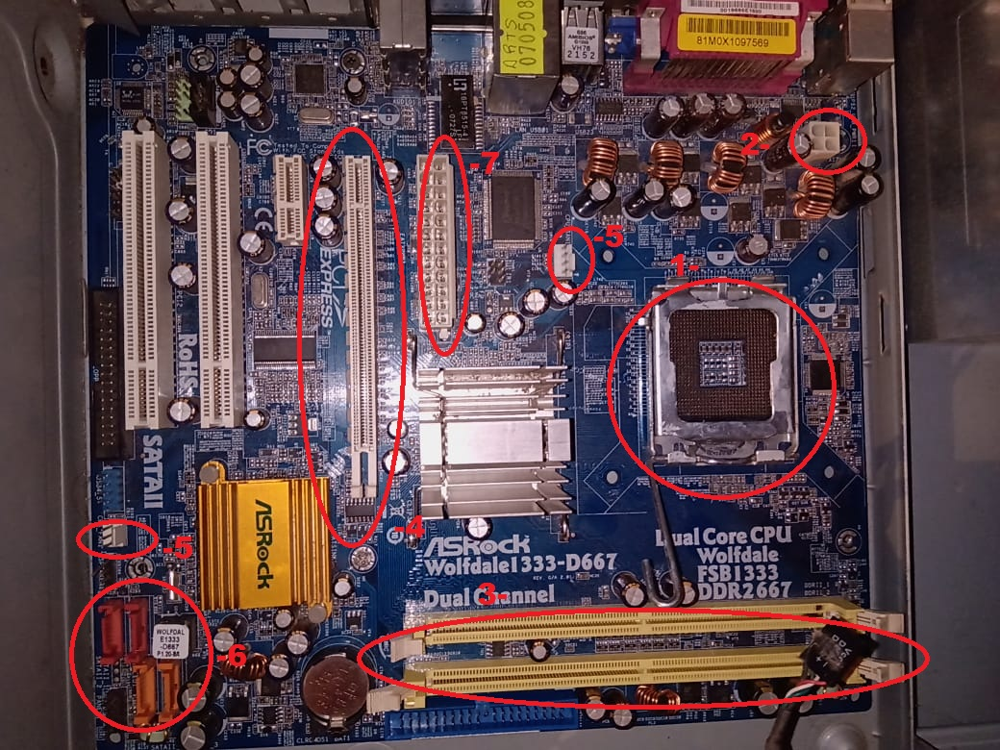
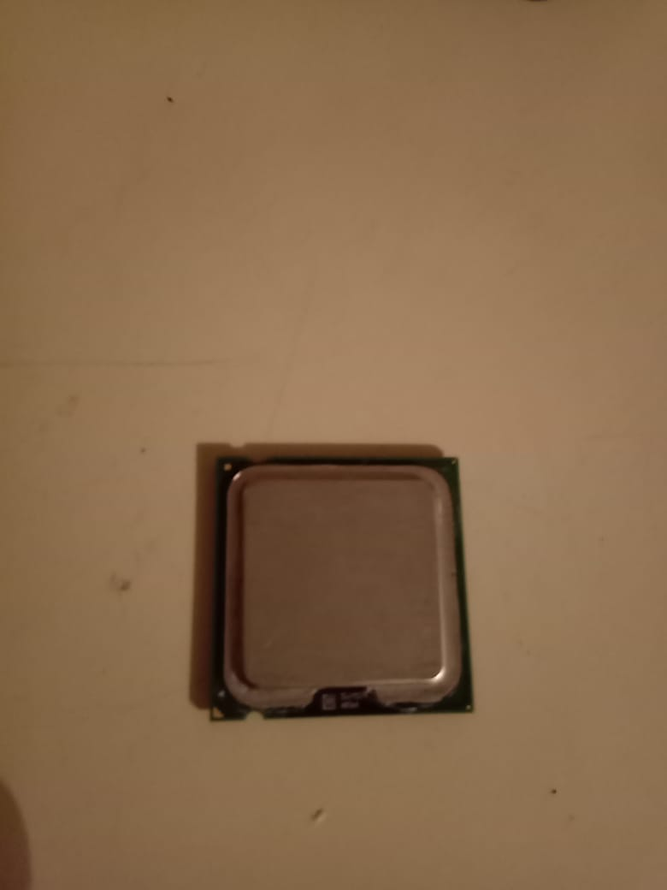
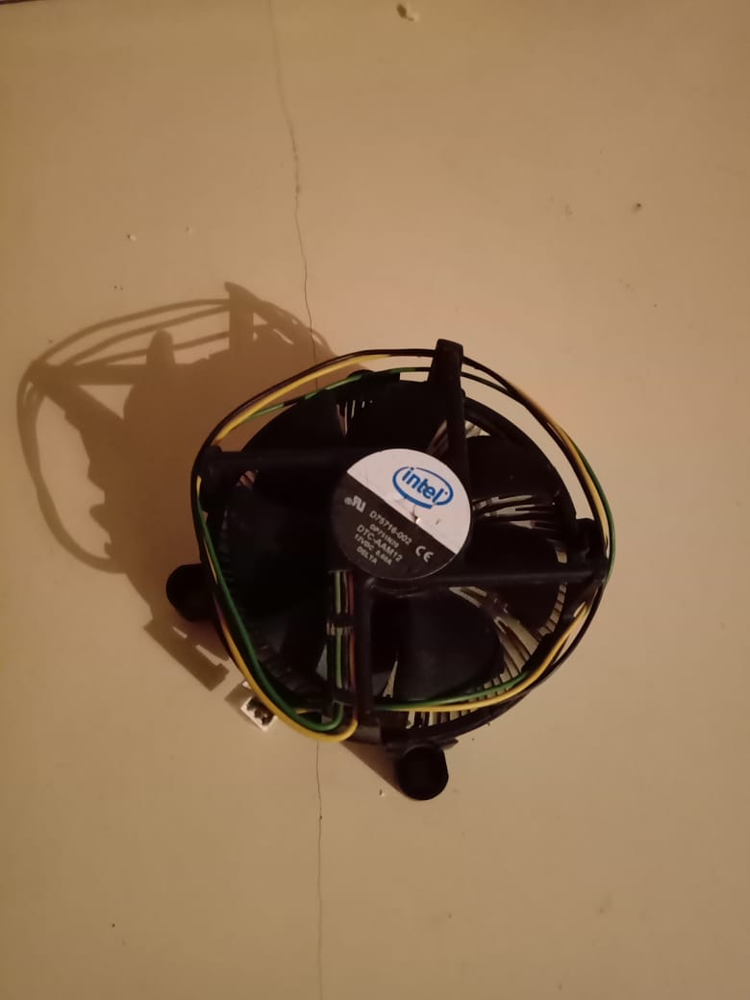
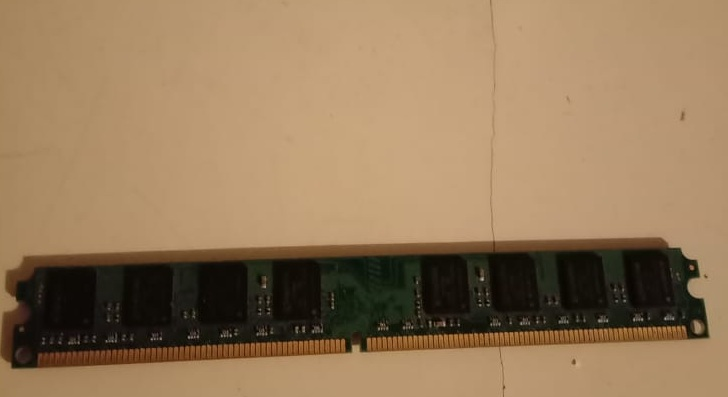
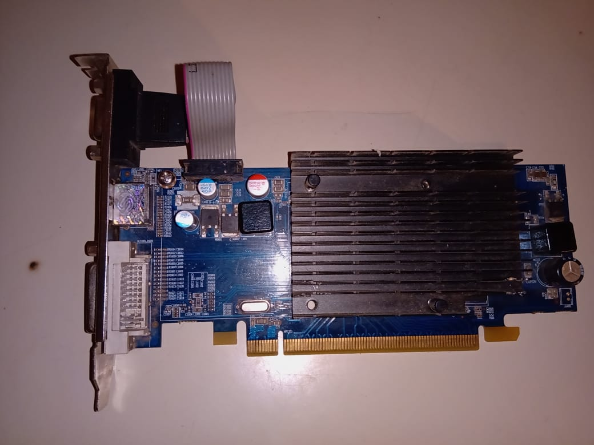
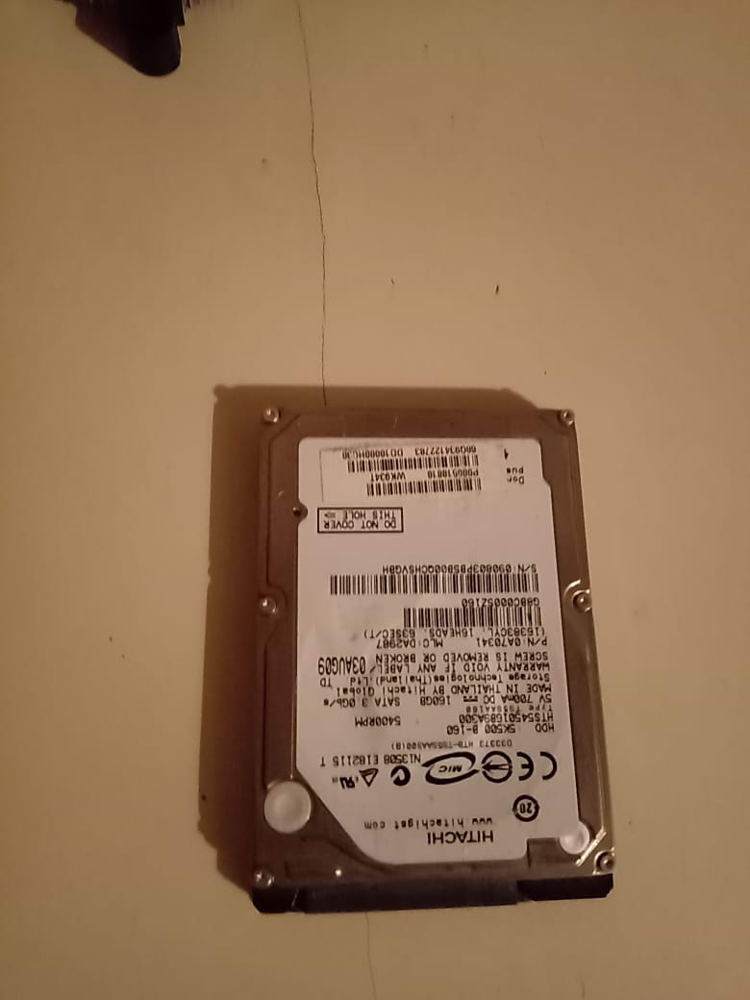
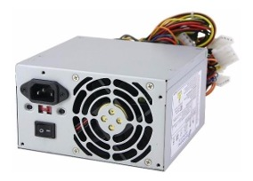

infocomputacion.site
infocomputacion.siteQUE ES UNA COMPUTADORA
Una computadora es un concepto que generalmente se refiere a ordenadores que estan formadas por un teclado mouse monitor y un gabinete que contiene el hardware,tambien estan en su forma portatil llamadas netbook(son mas pequeñas y tienen menos potencia que una notbook) y notebook(es una computadora que contiene todo lo que tiene un ordenador de escritorio de forma mas pequeña su rendimiento no siempre es menor que un ordenador de escritorio) en estos aparatos electronicos se pueden hacer multiples tareas como navegar por internet,crear documentos ,jugar juegos administrar programas para un trabajo imprimir documentos etc,estan estan dividas en dos partes la parte del software y la parte del hardware.
EL SOFTWARE

El software es la parte logica como ya habiamos dicho,bien dentro del software hay muchas deficiones, el sistema operativo es un conjunto de programas dentro de un software que se encarga de interectuar con la parte fisica haciendo posible su funcionamiento ejemplo windows, tambien estan los programas como juegos o alguna aplicacion que son instaladas dentro del sistema operativo, otra parte de software son los virus aunque el usuario dificilmente pueda interectuar con el o saber de su exitencia, al descargar o instalar programas malicioso ellos estan ahi,basicamente todo la parte logica de un dispositivo es un software ya que aunque no lo podemos tocar mayormente interactuamos con el.
SISTEMA OPERATIVO
Un sistema operativo(so)el software basico de una computadora que tiene una interfaz entre el resto de los programas del ordenador,las funciones basicas del sistema operativo son administrar los recursos de la memoria ram,disco rigido y micropresador,coordiar el hardware y organizar archivos.
LA PROGRAMACION
La programacion es aquello donde mediante codigos se desarollan sistemas,programas,paginas,aplicaciones, juegos etc,mediante lenjuages de programacion. existen varios tipos de lenguajes y cada uno funciona para cosas en especifico, y cada una tiene diferente formas de sintaxis,pero casi todas comparten la misma logica. los lenguajes mas usados son java que sirve para todo ademas de ser multiplataforma(es compatible en todos los sistemas), html5,ccs3 y javascript sirve para le creaciones de aplicaciones y paginas web,godot engine o gamemarker para crear juegos, hay muchos lenjuages y cada uno sirve para cosas diferentes.
EL HARDWARE
El hardware es la parte que contiene parte fisicas electronicas,donde estas cumple el funcionamiento de los dispostivos,celulares,computadoras,lcd,etc. Estas tienen una unidad de procesamiento(CPU) y una memoria de almacenamiento aleatorio(ram) juntas se encargan de procesar la informacion del sotfware para que estan cumpla la funciones que necesitan
PARTES QUE CONFORMAR UNA COMPUTADORA
Los componentes que son necesarios para el funcionamiento a nivel fisico de una computadora,hay de dos tipos de entrada y salida los de entrada:son el teclado,el mouse,controles de juegos como uno de ps4 que se puede usar para jugar en la pc por ejemplo,son los componentes que necesitamos para interactuar. los de salidas: son con los que logramos ver y escuchar lo que hacemos,como el monitor o parlantes(los portatiles tienen todo esto en uno),impresoras. los del ordenador(cpu):son los que estan internamento dentro del gabinete o internamente dentro de los portatiles vamos a ver ambos.
HARDWARE DE UN ORDENADOR DE MESA
-
Motherboard(placa madre):la placa madre es el componente principal ya que en ella se conectan los demas y es la que se encarga de trasmitir la informacion entre los componentes,hay dos tipos de placa madre,esta se dividen segun el tipo de socket. El socket es donde se inserta el micropresador,solo hay dos tipos,amd y intel,estos tienen diferentes modelos y socket.
-
Esto es el socket del procesador
. -
Aqui va un conector de la fuente este sirve para alimentar el procesador
. -
Estas son las ranuras de las ram
. -
Esta ranura se llama pci-express en ella es donde se pone las placas de video
. -
Estos conectores sirven para conectar los cooler de ventilacion
. -
Estos conectores sirven para las unidades de almacenamiento(disco rigidos o unidades de estado solido)
. -
Este es el conector principal donde se conecta desde la fuente,ya que es el que alimenta toda la placa madre.
-
-
Micropresador:es el cerebro del computadora ya que este componente procesa la informacion para que se trasmite a los demas componentes para que estos funcionen,como mencione anteriormente hay dos tipos y muchos modelos,voy a dejar un enlace para que investigen ustedes los tipos que hay,pero los que aun puden soportar programas y sistemas operativos actuales son de intel los modelos 775 para adelante y de amd los +AM2/AM3 para adelante,ya que los procesadores segun el modelo pueden procesar mas informacion y mayor velocidad esta se mide en ghz,y segun los nucleos que tienen,los nucleos es como decir que una persona tiene un cerebro,bueno hay procesadores que poseen mas de un nucleo y estos lo hacen mas potentes.
procesador 775 marca intel pentium 4 a 3.00ghz -
Cooler:el cooler es el que expulsa el calor que genera el micropresador para que este no se sobrecaliente y genere problemas,este funciona como sistema de refrigeracion,consta de un disipador y un cooler donde expulsa el calor que pasa por el disipador,hay de distintos tipos pero lo mas comunes son los que vienen en la caja junto el procesador,un ejemplo es este de intel.
cooler de stock intel -
Ram(memoria de orden aleatorio): esta sirve para guardar y enviar todas las instruciones que el micropresador necesita a mas cantidad de gb y ghz que tenga mas informacion podra envia datos al cpu sin que genere problemas. como los procesadores las memorias tienen distintos tipos y distintas velocidades,las mas comunes son drr2/drr3 y drr4 estas tienen diferentes ranuras y velocidad,estas van de la mano con los procesadores de su epoca,las memorias drr2 son mas compatibles con procesadores tipo 775 y +AM2 por ejemplo.
ram tipo drr2 de 2gb a 800ghz -
Placa de video(gpu):Las placas de video pueden ser externas pero por si las motherboard y algunos procesadores tiene gpu integradas,estas sirven para trasformar la informacion que envia el procesador en graficos para usarlos en los monitores,hay de diferentes tipos y modelos como las ram y los procesadores,el socket se le conoce como rarura pci-expres y siempre que una placa madre tenga esto se le puede poner cualquier tarjeta de video siempre y cuando el procesador soporte la potencia de la tarjeta de video,estas consta de una vram y velocidad ghz,la vram es la memoria dedicada que la tarjeta de vídeo posee para utilizarla al momento de renderizar fotogramas,cuanta mas vram tenga mas potente va ser,pero para usar toda esa potencia depdende que cantidad de ram tenga la placa madre y el tipo de procesador
placa de video ati radeon(amd) HD4550 de 512mb a 400 ghz -
Disco duro:los disco duros son la unidad de almacenamiento donde se monta el sistema operativo y se guardan las cosas,actualmente los que se usan son tipo SATA,hay dos tipos de unidad de almacenamiento. las unidades de disco (HDD) y las unidades de estados solidos(SSD),la diferencias es que los discos rigidos la informacion se guardan en discos fisicos y las unidades de estados solidos se guardan en chips,esto hacen los ssd mas rapidos y muchos mas duraderos otra cosa a destacar es que los disco rigidos tienen diferentes tamaños ya que exiten los de netbook que son de 2.5 pulgadas y los mas grandes son de 3.5 pulgadas que son mas para computadoras de escritorio en cambio los sdd tiene un tamaño predeterminado que es de 2.5.
disco rigido de netbook 2.5 pulgadas -
Fuente:estas sirven para dar energia a todos los componentes es importante que estas tengan como minimo 450w
